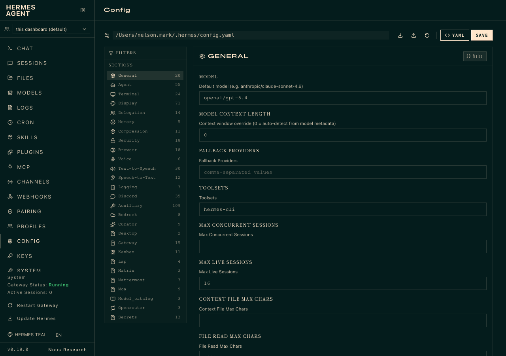
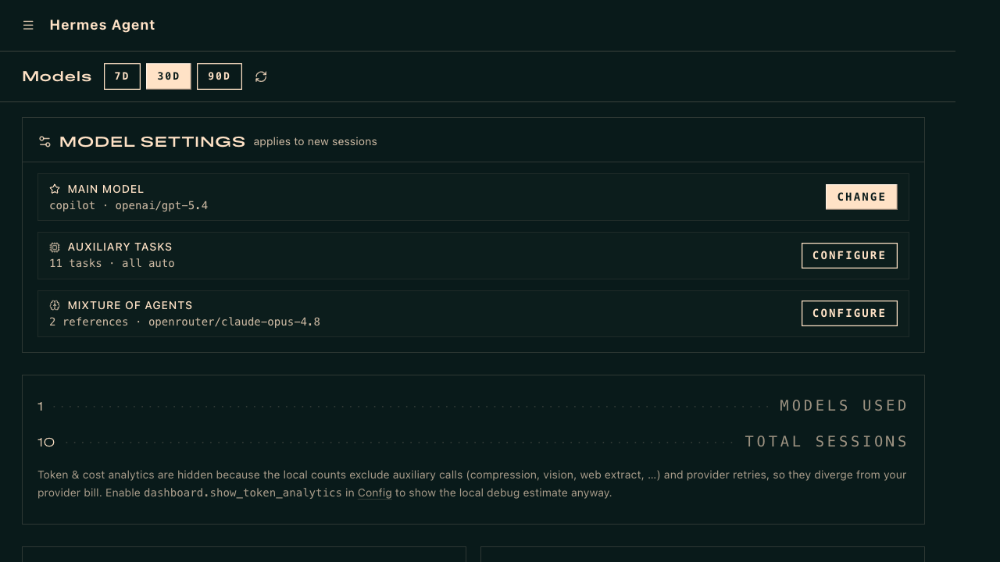

Getting Started — Install & First Launch
Three install paths. Pick the one that matches you. Run hermes setup, choose a model provider, and verify one clean chat works. That's it — don't add features until this baseline passes.
Install paths
🖥️ Desktop App (easiest)
macOS / Windows installer from the Hermes website. Includes CLI + desktop UI.
⚡ One-line CLI
Linux / macOS / WSL2 / Android. Installs to ~/.hermes/.
🐳 Docker
Self-hosters and home labs. Gateway + Workspace in one compose.
The fastest safe method is to generate a token locally with GitHub CLI and paste it into the Hermes setup prompt. Do this in a new terminal before running hermes setup:
- Install GitHub CLI (if needed):Terminalbrew install gh
- Log in to GitHub:Terminalgh auth login
- Print your token — copy the output:Terminalgh auth token
When hermes setup asks for your Copilot API key, paste the token from step 3. You do not need to store it separately — Hermes persists it in ~/.hermes/.env after first use.
- Run setup wizard — choose your LLM provider and model
hermes setup --portal(one OAuth covers model + Tool Gateway tools) - Verify chat works — one clean conversation before adding anything
hermesorhermes --tuifor the modern terminal UI - Test session resume — ensures persistence is working
hermes --continue(should resume your last session) - Run a health check — catches config issues early
hermes doctor - Start the gateway — only after base chat is confirmed
hermes gateway run
hermes --continue to resume this session later.
Configuring Your Primary LLM
localhost:9119). Hermes Workspace has no model settings of its own; it inherits whatever Hermes Agent is using.
localhost:9119/models)🌟 Main Model
The model used for all chat sessions. Click CHANGE to pick a different provider or model. Takes effect on new sessions.
⚙️ Auxiliary Tasks
11 background tasks (vision, compression, kanban decomposer, etc.). Default is "all auto" — uses your main model. Click CONFIGURE only if you need task-specific overrides.
Recommendation: leave Auxiliary Tasks at AUTO. The auto setting inherits your main model for all background tasks. Changing individual tasks only makes sense for cost optimization at scale (e.g., pointing the decomposer at a cheaper model while keeping your main model on a frontier tier).

Prefer editing config directly? The main model is stored in ~/.hermes/config.yaml:
--ctx-size 65536.